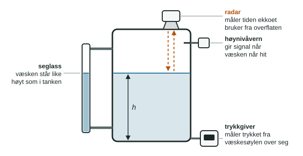

Nivåmåling
Hvor full er tanken? Det spørsmålet stiller operatøren mange ganger hver dag. En tank som går full, kan gi utslipp. En tank som går tom, kan ødelegge pumpa. Her lærer du de vanligste måtene å måle nivå på, og hva som kan få en nivåmåler til å vise feil.
Hvorfor måler vi nivå?
- Hindre overfylling. Renner en tank over, kan kjemikalier komme ut i naturen eller gi brann og giftig damp.
- Beskytte pumper. Går en tank tom, suger pumpa luft og kan bli ødelagt. Det kalles at pumpa går tørr.
- Holde prosessen stabil. Mange tanker og kolonner må holde et jevnt nivå for at prosessen skal gå riktig.
- Vite hvor mye du har. Nivået i lagertankene viser hvor mye råstoff og produkt bedriften har.
Kontinuerlig måling og nivåbrytere
Det er to hovedtyper nivåmålere:
- En kontinuerlig nivåmåler viser nivået hele tiden, for eksempel 72 %.
- En nivåbryter sier bare fra når væsken når et bestemt punkt. Den er enten «av» eller «på».
Et høynivåvern er en nivåbryter høyt oppe i tanken som stopper fyllingen før tanken blir overfylt. En nivåbryter lavt nede kan stoppe pumpa før tanken går tom. Nivåbryterne er ofte helt adskilt fra den kontinuerlige nivåmåleren. Da virker de selv om nivåmåleren viser feil. I flytskjemaer og alarmlister heter høynivåvernet ofte LAHH (høy-høy-alarm for nivå).

Seglasset
Den enkleste nivåmåleren er et seglass: et glassrør eller et vindu på siden av tanken. Glassrøret er koblet til tanken både nede og oppe. Væsken står derfor like høyt i glasset som i tanken, og du kan se nivået direkte.
Seglasset trenger ingen strøm og er nyttig for å sjekke at nivåmåleren på skjermen viser riktig. Men det kan bare leses av på stedet.
Nivå målt med trykk
Jo høyere væsken står, jo større er trykket i bunnen av tanken. Det lærte du på siden Trykk i væsker: \( p = \rho \cdot g \cdot h \). En trykkgiver i bunnen av tanken kan derfor brukes til å måle nivået. Snur du formelen, får du høyden:
\[ h = \frac{p}{\rho \cdot g} \]
- h = høyden av væsken over giveren (m)
- p = trykket giveren måler (Pa)
- ρ = tettheten til væsken (kg/m³)
- g = 9,81 m/s²
Dette er en av de vanligste måtene å måle nivå på i prosessindustrien. Giveren eller styresystemet regner om fra trykk til nivå, men da må de vite hvilken tetthet væsken har.
Oppgave: Tank 1 i pumperommet er 1,25 m høy og har en nivåmåler i bunnen som måler trykket fra vannet. Anta at giveren sitter helt nederst, at 0 % er bunnen og at 100 % er 1,25 m. Giveren måler 0,098 bar. Hvor høyt står vannet, og hvor mange prosent av full tank er det?
Løsning:
- Gjør om til pascal: \( p = 0{,}098 \text{ bar} = 9800 \text{ Pa} \)
- \( h = \dfrac{p}{\rho \cdot g} = \dfrac{9800 \text{ Pa}}{1000 \text{ kg/m}^3 \cdot 9{,}81 \text{ m/s}^2} \approx 1{,}0 \text{ m} \)
- Prosent av full tank: \( \dfrac{1{,}0 \text{ m}}{1{,}25 \text{ m}} \cdot 100\,\% = 80\,\% \)
Svar: Vannet står ca. 1,0 m høyt. Det er 80 % av full tank. Måleren i tank 1 er en piezoresistiv trykkmåler. Membranen i måleren har små motstander som endrer seg når membranen bøyer seg, og det gjøres om til et signal. Se skissen på siden Trykkmåling.
I en lukket tank med trykk over væsken, for eksempel en trykkbeholder, presser også gassen på toppen ned på væsken. Da brukes en differansetrykkmåler som måler trykket både i bunnen og på toppen. Forskjellen mellom dem er trykket fra væsken alene.
Radar og ultralyd
En nivåradar sitter på toppen av tanken. Den sender radiobølger ned mot væsken og måler hvor lang tid det tar før ekkoet kommer tilbake fra overflaten. Kort tid betyr at væsken står høyt. Lang tid betyr at den står lavt. Radaren er ikke i kontakt med væsken, så den passer godt for etsende og skitne væsker.
En ultralydmåler virker på samme måte, men sender lydbølger i stedet for radiobølger. Den er billigere, men forstyrres lettere av skum, damp og støv i tanken. En trykkgiver i bunnen påvirkes nesten ikke av skum, fordi skummet veier svært lite.
Flottør
En flottør er en hul kule eller sylinder som flyter på væsken og følger nivået opp og ned. Flottøren kan flytte en viser på utsiden av tanken, eller slå en bryter av og på. Flottører brukes mest som nivåbrytere. Ulempen er at de har bevegelige deler som kan sette seg fast.
Hva betyr 0 % og 100 %?
Nivå oppgis ofte i prosent. Men 0 % betyr ikke alltid at tanken er helt tom, og 100 % betyr ikke alltid at den er helt full. 0 % og 100 % er de punktene måleren er stilt inn på. Måler en trykkgiver som sitter et stykke over bunnen, er det fortsatt væske i tanken når den viser 0 %. Sjekk hvor 0 % og 100 % er på tanken du jobber med.
Når nivåmåleren viser feil
- Feil tetthet. En trykkgiver regner om fra trykk til nivå med én bestemt tetthet. Fyller du tanken med en tyngre eller lettere væske enn den er stilt inn for, viser den feil.
- Skum og damp. Radar og særlig ultralyd kan få ekko fra skummet i stedet for fra væsken.
- Belegg og avleiringer. Belegg på føleren eller i koblingen til giveren kan gi feil eller treg måling.
- Flottør eller bryter som henger. En flottør som har satt seg fast, viser samme nivå hele tiden.
- Tett eller stengt seglass. Er ventilene til seglasset stengt, eller koblingen tett, viser glasset et gammelt nivå.
Oppgave: En trykkgiver er stilt inn for vann, med tettheten 1000 kg/m³. Nå fylles tanken med saltlake, som har tettheten 1200 kg/m³. Saltlaken står 1,50 m høyt. Hvilket nivå viser giveren?
Løsning:
- Trykket fra saltlaken: \( p = 1200 \text{ kg/m}^3 \cdot 9{,}81 \text{ m/s}^2 \cdot 1{,}50 \text{ m} \approx 17\,700 \text{ Pa} \)
- Giveren tror det er vann: \( h = \dfrac{17\,700 \text{ Pa}}{1000 \text{ kg/m}^3 \cdot 9{,}81 \text{ m/s}^2} \approx 1{,}80 \text{ m} \)
Svar: Giveren viser ca. 1,80 m, altså 0,30 m for høyt. Med en lettere væske, for eksempel olje, ville den vist for lavt. Det er farligst, for da kan tanken bli overfylt mens skjermen viser at det er god plass.
Når du fyller en tank, skal nivået stige jevnt. Står det stille, eller stiger det mye fortere eller saktere enn det burde, kan nivåmåleren vise feil. Sjekk seglasset, eller regn ut hvor fort nivået burde stige ut fra mengden som pumpes inn.
- Stol ikke bare på høynivåvernet når du fyller en tank. Følg med på nivået hele tiden. Se også Overfylling av tank i HMS.
- Høynivåvernet skal aldri kobles ut eller overstyres uten tillatelse etter bedriftens prosedyre.
- Fylles en tank med et annet stoff enn vanlig, må du sjekke at nivåmåleren er stilt inn for riktig tetthet.
- Et seglass kan knuse. Ventilene til glasset skal kunne stenges, og et sprukket glass skal meldes og byttes.
Test deg selv
Hvilken nivåmåler er ikke i kontakt med væsken?
- Flottør
- Trykkgiver i bunnen
- Nivåradar
Radaren sitter på toppen og måler tiden ekkoet bruker fra væskeoverflaten. Flottøren og trykkgiveren er i kontakt med væsken.
En trykkgiver i bunnen av en vanntank måler 0,196 bar. Omtrent hvor høyt står vannet?
- 0,2 m
- 2,0 m
- 20 m
\( h = \dfrac{19\,600 \text{ Pa}}{1000 \cdot 9{,}81} \approx 2{,}0 \text{ m} \). Tommelfingerregelen 10 m vann ≈ 1 bar gir det samme: 0,2 bar ≈ 2 m.
En trykkgiver er stilt inn for vann, men tanken fylles med olje som er lettere enn vann. Hva viser giveren?
- For høyt nivå
- For lavt nivå
- Riktig nivå
Lettere væske gir mindre trykk for samme høyde. Giveren tror det er vann, og regner ut et lavere nivå enn det virkelige. Da kan tanken bli overfylt.
Hva er forskjellen på en nivåbryter og en kontinuerlig nivåmåler?
- Nivåbryteren sier bare fra når nivået når et bestemt punkt. Den kontinuerlige måleren viser nivået hele tiden.
- Nivåbryteren er mer nøyaktig.
- Nivåbryteren brukes bare på laben.
En nivåbryter er enten av eller på, for eksempel et høynivåvern. En kontinuerlig nivåmåler viser for eksempel 72 %.
Seglasset viser at tanken er halvfull, men skjermen viser 95 %. Hva gjør du?
- Stoler på skjermen, den er mest moderne.
- Stoler på seglasset og fortsetter å fylle.
- Stopper fyllingen og finner ut hvilken måler som viser feil.
Når to målere viser så forskjellig, viser en av dem feil. Seglasset kan være tett eller stengt. Fortsetter du å fylle før du vet hvem som har rett, kan tanken bli overfylt.
Ordliste
| Begrep | Forklaring | Engelsk |
|---|---|---|
| nivå | Hvor høyt væsken står i en tank. Oppgis ofte i prosent av full tank eller i meter. | level |
| seglass | Glassrør eller vindu på siden av en tank der du kan se hvor høyt væsken står. | sight glass |
| kontinuerlig nivåmåler | Nivåmåler som viser nivået hele tiden, for eksempel i prosent av full tank. | level transmitter |
| nivåbryter | Nivåmåler som bare sier fra når væsken når et bestemt punkt i tanken. Den er enten av eller på. | level switch |
| høynivåvern | En nivåbryter høyt oppe i en tank som stopper fyllingen før tanken blir overfylt. | high level switch |
| nivåradar | Nivåmåler på toppen av en tank som sender radiobølger mot væsken og måler hvor lang tid ekkoet bruker. | radar level transmitter |
| ultralydmåler | Måler som bruker lydbølger. Til nivå måler den hvor lang tid ekkoet fra væskeflaten bruker, og utenpå rør måler den forskjellen i lydens fart med og mot strømmen. | ultrasonic meter |
| flottør | Hul kule eller sylinder som flyter på væsken og følger nivået opp og ned. | float |
Les mer
- Trykk i væsker i Fysiske prinsipper forklarer formelen \( p = \rho \cdot g \cdot h \).
- Tanker og beholdere i Enhetsoperasjoner viser hvor nivåmåler og høynivåvern sitter på en tank.
- Overfylling av tank i HMS.
Om kildene: Teksten, eksemplene og figuren på denne siden er laget for dette nettstedet. Siden bygger på undervisningsopplegg i kjemiprosess- og laboratoriefag ved Sauda vgs, som er utarbeidet med utgangspunkt i blant annet Kjemien stemmer, Laboranten og åpne nettkilder.